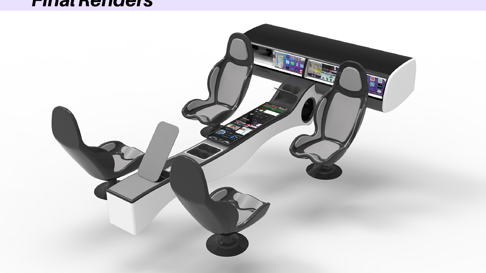
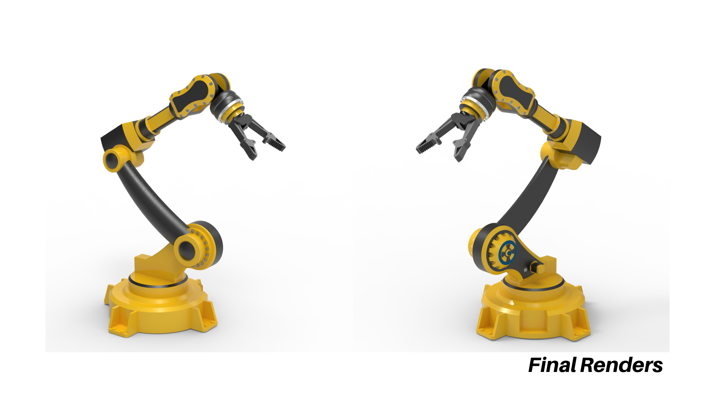
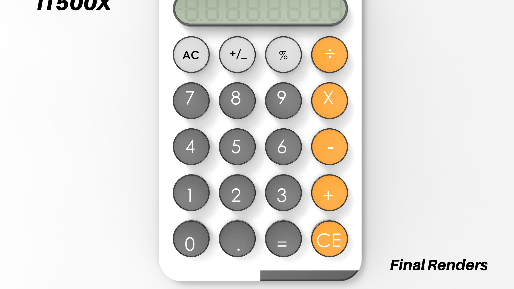

Luxury concept vehicle interior focusing on passenger ergonomics, high-end aesthetics, and digital interfaces.

Designing a 6 D.O.F industrial arm meticulously tailored for complex manufacturing and assembly requirements.

Modernistic pocket calculator concept incorporating a typewriter-interfaced mechanical MX Blue keyboard aesthetic.